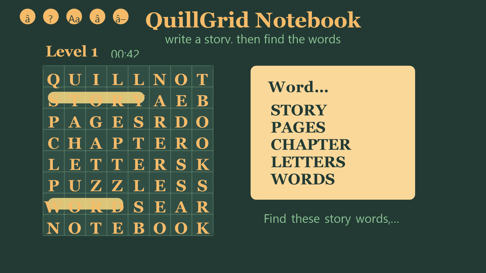
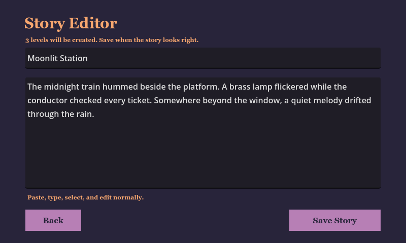
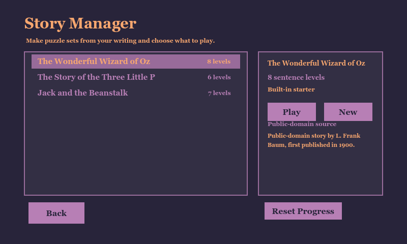
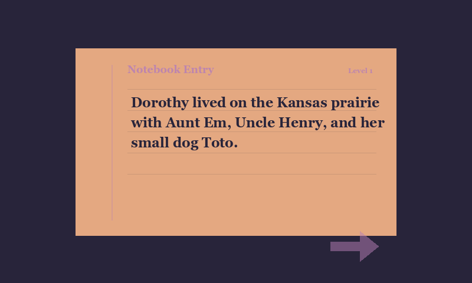

QuillGrid Notebook
A story-based Android word-search game where players turn their own writing into playable notebook chapters.
Project
I built QuillGrid Notebook as a compact publishing project: a complete game loop, custom letter-grid interface, Android App Bundle export, store listing assets, and Play Console release preparation.
I keep the public repository as an exhibit for the finished app rather than a source-code release. The active Godot project and build tooling remain local while the privacy policy and store-facing materials stay public.
Gameplay
- Create or paste a short story.
- Generate puzzle chapters from story sentences.
- Find selected words on the letter grid.
- Reveal each sentence as the notebook is completed.
- Save stories, progress, display settings, and audio settings locally.
Release
The first production release, 1.0.0, has been submitted to Google Play and is waiting for Google review and publishing propagation.
Privacy policy: QuillGrid Notebook Privacy Policy
Media



